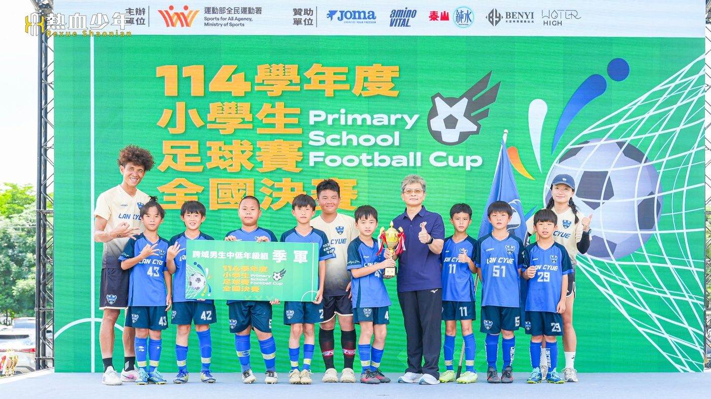
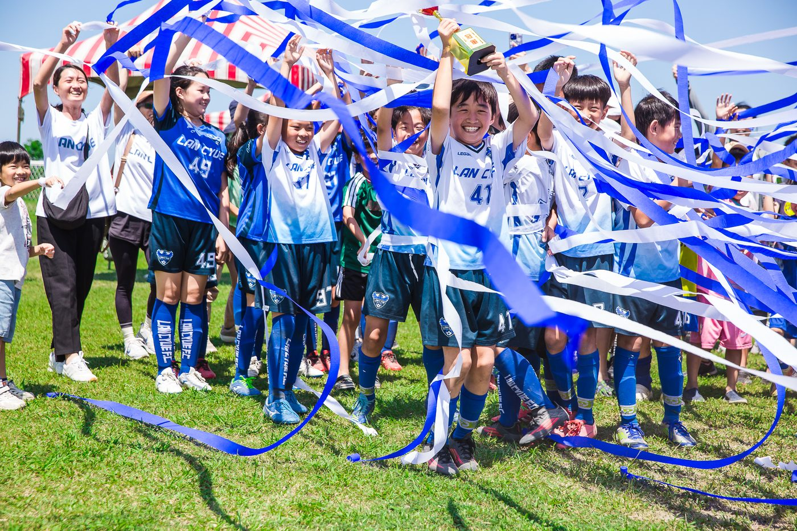

01我的故事
讓宜蘭足球站上全國舞台
近年來，藍鵲持續參與各項縣市及全國性賽事，累積亮眼成績，包括全國學童盃、全國少年盃、全國小學生足球賽、健身工廠盃等賽事皆有優異表現，並多次站上全國舞台，為宜蘭爭取榮譽。


推薦理由
「讓宜蘭的孩子，透過足球走向世界。」
這不只是口號，而是藍鵲一直在做的事情。從帶孩子到外縣市比賽、舉辦親子盃、一路打進全國賽，到現在想規劃日本、韓國移地訓練。我們期待透過更多資源與企業支持，持續為宜蘭足球爭光。
讓宜蘭足球站上全國舞台
近年來，藍鵲持續參與各項縣市及全國性賽事，累積亮眼成績，包括全國學童盃、全國少年盃、全國小學生足球賽、健身工廠盃等賽事皆有優異表現，並多次站上全國舞台，為宜蘭爭取榮譽。


「讓宜蘭的孩子，透過足球走向世界。」
這不只是口號，而是藍鵲一直在做的事情。從帶孩子到外縣市比賽、舉辦親子盃、一路打進全國賽，到現在想規劃日本、韓國移地訓練。我們期待透過更多資源與企業支持，持續為宜蘭足球爭光。
歷屆成績 · 更新於 2026/09/15
訓練與參賽計畫
計畫理念－讓宜蘭的孩子，透過足球走向世界
在宜蘭，足球資源相較於都會區有限，但孩子們對足球的熱愛卻從未因此減少。
藍鵲足球俱樂部自2017年成立以來，始終秉持「快樂踢球」的理念，陪伴孩子從基礎開始學習，不只培養足球技術，更重視品格教育、團隊合作、責任感及面對挫折的勇氣。
近年來，藍鵲一步一步從地方球隊走向全國舞台，曾在全國少年盃、全國學童盃、全國小學生足球賽等重要賽事獲得優異成績，讓更多人看見宜蘭基層足球的努力與實力。然而，我們深知，全國並不是終點，而是另一個開始。
我們希望讓孩子有機會走出臺灣，前往日本、韓國等國家，親身體驗不同的足球文化與訓練方式，透過移地訓練及國際交流，學習更先進的觀念，提升競技能力，也拓展視野與自信。
許多孩子而言，這可能是人生第一次踏上國際舞台。這趟旅程，不只是一次比賽，更是一堂改變眼界的教育課程，讓他們知道世界有多大，也相信自己有能力站上更高的舞台。
企業的每一份支持，都將直接投入球員的訓練、比賽及國際交流計畫，讓孩子能在更完善的環境中成長，勇敢追逐夢想。
我們相信，今天支持的不只是一支球隊，而是一群願意努力、不輕易放棄的孩子；今天播下的一顆種子，未來將成為宜蘭足球持續向前的力量。
一、善用經費於訓練、比賽、移地訓練費等用途，幫助球員提升技術的同時，加強身體素質，以爭取在全國比賽取得佳績。
二、劃前往日本、韓國等國家進行移地訓練與國際交流，經費將運用於機票、住宿、交通、訓練場地、交流賽及相關行政費用，讓球員有機會與不同國家的隊伍切磋學習，拓展國際視野，吸收先進的足球觀念與訓練方式，提升自信心與競爭力。
我想達到…
以基本技術、體能訓練及個人能力提升為主，建立球員正確的足球觀念，培養傳、停、帶、射等基本技術，並透過小組配合及團隊戰術演練，提升整體默契。同時安排體能訓練及練習賽，為各項賽事做好充分準備。
參與縣內外各級足球賽事及全國性盃賽，透過實戰累積比賽經驗，檢視訓練成果，並依據比賽內容持續修正技術與戰術。規劃移地訓練及國際交流（如日本、韓國），與不同層級隊伍切磋學習，提升球員競爭力、適應能力及國際視野。
比賽結束後安排恢復性訓練及體能調整，檢討年度訓練與比賽成果，分析球員優缺點，規劃下一階段訓練目標。透過趣味活動及團隊課程，維持運動習慣，降低運動傷害風險，為下一訓練週期做好準備。
依球員年齡及發展階段安排體能訓練，內容包含速度、敏捷、爆發力、肌力、協調性、核心穩定及心肺耐力等項目，並結合球性訓練，提升運動表現及降低運動傷害風險，使球員具備良好的身體素質，以應付高強度訓練、比賽及國際交流活動。
透過系統化訓練，加強傳球、停球、帶球、盤帶、射門、一對一攻防及守門技術等基本能力，並依球員不同位置進行個別技術培養。規劃與國內外球隊交流及日本、韓國移地訓練，學習不同國家的技術觀念與訓練方式，提升球員個人能力及競爭力。
依據各年齡層建立攻守戰術觀念，訓練團隊配合、攻防轉換、定位球戰術及比賽閱讀能力，透過練習賽、正式比賽及國際交流賽累積實戰經驗，提升球員臨場判斷能力及團隊默契。
培養球員紀律、自信、責任感、抗壓能力及運動家精神，學習尊重隊友、教練、裁判及對手，建立正向態度與團隊合作精神。透過國內外賽事及日本、韓國移地訓練，培養球員獨立自主、適應不同文化環境及面對挑戰的能力，拓展國際視野，成為兼具品格與競爭力的優秀運動員。
需求項目與數量（依官方頁面）
| 選手營養費 | NT$ 72,000 |
| 教練指導費 | NT$ 307,200 |
| 參賽報名費 | NT$ 80,000 |
| 訓練器材裝備費 | NT$ 17,996 |
| 訓練器材裝備費 | NT$ 20,000 |
| 訓練器材裝備費 | NT$ 40,000 |
| 訓練器材裝備費 | NT$ 20,000 |
| 運動防護費 | NT$ 50,000 |
| 參賽旅運費 | NT$ 192,000 |
| 移地訓練費 | NT$ 225,000 |
| 經費需求合計 | NT$ 1,024,196 |
標示「不公開」者為官方頁面未揭露之欄位。